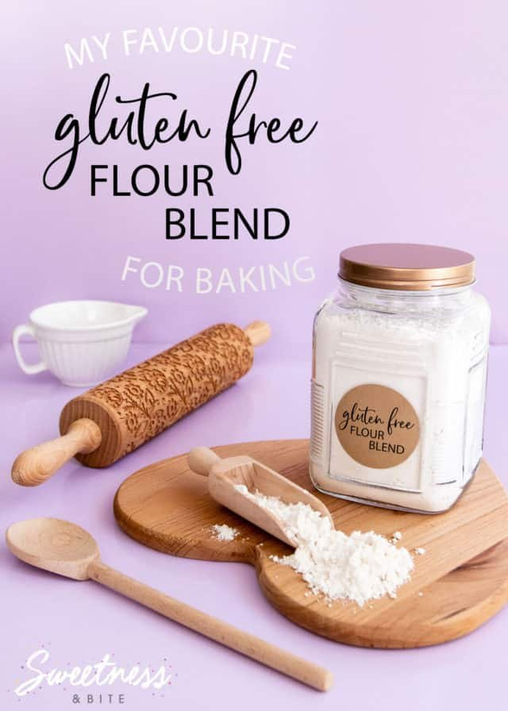

I once made a vegan chocolate cake that looked perfect on the outside and was liquid on the inside. Like, literal chocolate soup. I cut into it and the center poured out onto the plate. My kids thought it was a science experiment. My husband asked if I meant to do that.
I did not mean to do that.
The problem was eggs—or lack of them. I used a flax egg substitution that worked great for cookies but completely failed for cake. Different structure, different needs. I learned that day that vegan egg replacers are not one‑size‑fits‑all. You have to match the replacer to the job.
After about five years of messing up, I finally figured out the math. Let me save you the misery.
What eggs actually do (most people don't know this) Eggs aren't just eggs. They're like five different ingredients in one shell.
Binding: Eggs hold stuff together. Without them, your veggie burger crumbles and your cookies fall apart.
Leavening: Egg whites trap air. That's why angel food cake is so fluffy.
Moisture: Eggs add liquid. A dry cake is often an egg‑deficient cake.
Fat: Egg yolks contain fat. That fat adds richness and tenderness.
Structure: Eggs proteins set when heated. That's what turns batter into cake.
Different vegan replacers do different combinations of these jobs. None of them do all five. So you have to pick the right one for the recipe.
Here's the cheat sheet I wish I had ten years ago:
Replacer Binding Leavening Moisture Fat Best for Flax egg ✅✅ ❌ ✅ ❌ Cookies, muffins, quick breads Chia egg ✅✅ ❌ ✅ ❌ Same as flax, but grittier Applesauce ❌ ❌ ✅✅ ❌ Cakes, brownies (moisture) Mashed banana ❌ ❌ ✅✅ ❌ Cakes, pancakes (banana flavor) Aquafaba (chickpea brine) ✅ ✅✅ ✅ ❌ Meringue, mousse, angel food Silken tofu ✅ ❌ ✅✅ ❌ Cheesecake, dense brownies Commercial powder ✅✅ ✅ ✅ ✅ Almost everything (but expensive) Yogurt (vegan) ✅ ❌ ✅ ✅ Cakes, muffins The checkmarks show strength. Two checkmarks means it's really good at that job.
Flax eggs: the workhorse but not for everything Flax eggs are the most common vegan replacer because they're cheap and easy. One tablespoon ground flaxseed plus three tablespoons water, let sit for five minutes until it turns into gel.
That gel binds. It holds cookies together. It makes muffins stay in one piece. But it does nothing for leavening or fat.
The ratio: 1 flax egg = 1 egg in the recipe.
The scaling problem: Flax eggs work great at small scale—one or two eggs. But when you scale up to 10 eggs, the gel becomes too thick and gummy. The structure collapses.
My rule: Don't scale flax eggs beyond 4x. If your recipe calls for 2 eggs originally and you need 8 eggs (4x), that's fine. But if you need 10 eggs (5x), switch to a different replacer or make multiple batches.
Real example: I once scaled a flax‑egg cookie recipe from 24 cookies (2 eggs) to 120 cookies (10 eggs). I used 10 flax eggs. The cookies spread like crazy. They were flat, greasy, and sad. The flax gel was too much liquid and not enough structure.
Now I know better. For 5x or higher, I use commercial egg replacer or make two batches of 2.5x.
Applesauce and banana: moisture bombs These are not binders. I cannot stress this enough. Applesauce adds moisture and a little sweetness, but it does not hold anything together.
The ratio: 1/4 cup applesauce = 1 egg.
When to use it: Cakes, brownies, quick breads—things that already have structure from flour and leavening. Don't use it for cookies. Your cookies will spread into pancakes.
The scaling issue: Applesauce scales linearly. 1x to 10x works fine. But at large scale, the added moisture can make the batter too thin. You might need to reduce the liquid elsewhere.
Banana is the same but different. 1/4 cup mashed banana = 1 egg. But banana has a strong flavor. At large scale (like 50 servings), your cake will taste like banana even if it's supposed to be vanilla. That's not always bad, but you need to know it.
Aquafaba: magic bean water Aquafaba is the liquid from a can of chickpeas. It whips up just like egg whites. You can make meringue, macarons, even marshmallows with it.
The ratio: 3 tablespoons aquafaba = 1 egg white. For a whole egg, use 3 tablespoons but you're missing the yolk's fat. Best to use aquafaba only for recipes that call for egg whites.
The scaling problem: Aquafaba scales fine—10x is fine—but the whipping time changes. A small batch whips in 3 minutes. A large batch might take 8 minutes. You also need a bigger bowl because it expands like crazy.
My disaster: I tried to scale a vegan meringue from 4 servings to 40. 30 tablespoons of aquafaba. My stand mixer was not big enough. It overflowed. I had chickpea foam all over my counter. My kitchen smelled like beans for two days.
The fix: Batch it. Make four batches of 10 servings instead of one batch of 40. Or use a commercial whipping agent.
Silken tofu: for dense, creamy things Silken tofu is great for cheesecake, pudding, and dense brownies. It adds moisture and some binding.
The ratio: 1/4 cup blended silken tofu = 1 egg.
The scaling problem: Tofu scales linearly, but blending it at large scale is annoying. You can't put 10 cups of tofu in a home blender. It won't fit. You'll have to blend in batches.
Pro tip: Buy aseptic boxes of silken tofu. They're shelf‑stable and easier to blend. Open three boxes, dump them in a large bowl, and use an immersion blender. Much easier than a countertop blender.
Commercial replacers: expensive but worth it Bob's Red Mill, Follow Your Heart, Ener‑G—these powders are designed to replace eggs at any scale. They usually contain potato starch, tapioca flour, and leavening agents.
The ratio: Follow the package. Usually 1 tablespoon powder + 2 tablespoons water = 1 egg.
The scaling advantage: These scale perfectly linearly. 10x, 20x, no problem. The powder is consistent. The water is consistent. No gummy texture, no weird flavors.
The downside: Cost. A box of Bob's is like $8 and makes maybe 30 eggs. Homemade flax eggs cost pennies.
My advice: Use commercial replacers for large‑scale vegan baking (50+ servings). Use flax or chia for everyday small batches. Save the aquafaba for meringue projects.
The math you actually need Here's the part where most guides get too technical. I'll keep it simple.
For most recipes (cookies, muffins, quick breads) at 1x-4x scale: Use flax eggs. One tablespoon flax + three tablespoons water per egg. Scale linearly.
For cakes and brownies at any scale: Use applesauce or mashed banana (1/4 cup per egg). Scale linearly. But add 1/2 teaspoon baking powder per egg to help with leavening (since applesauce doesn't leaven).
For large scale (5x or higher): Switch to commercial replacer. It's worth the cost.
For recipes that need structure (veggie burgers, meatloaf): Use flax eggs with an extra tablespoon of flour or breadcrumb per egg. The flax binds, but the flour adds bulk.
For meringue or angel food: Aquafaba. Scale but watch your mixer bowl size. Batch if needed.
A real‑world example: scaling vegan brownies I make vegan brownies for my kids' school events. They're always a hit. Here's the original recipe (16 brownies, 8x8 pan).
Original (1x):
120g flour
200g sugar
50g cocoa powder
1/2 tsp baking powder
1/4 tsp salt
2 flax eggs (2 tbsp flax + 6 tbsp water)
80g oil
100g water
100g chocolate chips
Scale to 64 brownies (4x):
Flour: 480g
Sugar: 800g
Cocoa: 200g
Baking powder: 0.5 × (4^0.75) = 0.5 × 2.8 = 1.4 tsp (not 2 tsp)
Salt: 0.25 × (4^0.85) = 0.25 × 3.2 = 0.8 tsp (not 1 tsp)
Flax eggs: 8 tbsp flax + 24 tbsp water (scales linearly because 4x is fine)
Oil: 320g
Water: 400g
Chocolate chips: 400g
Scale to 128 brownies (8x): Now I switch to commercial replacer because 8 flax eggs is too many. Use Follow Your Heart powder: 8 tbsp powder + 16 tbsp water.
See how that works? At a certain point, you just change tools.
The tool that does this for you I'm lazy, so I built a tool that handles the math and recommends which replacer to use based on your scale.
I used flax eggs for a delicate chocolate cake. The cake needed structure and leavening. Flax eggs provide binding and moisture, but no leavening. So the edges set but the center stayed raw. The cake collapsed into soup.
The fix: I switched to 1/4 cup applesauce + 1/2 teaspoon baking powder per egg. The applesauce added moisture, the baking powder added lift. The cake worked perfectly.
Now I have a rule: For cakes, never use flax. Always use applesauce or banana plus extra baking powder.
One more thing: don't forget the salt When you remove eggs, you're removing salt (eggs contain a small amount of sodium). It's usually not enough to matter. But at very large scales (10x+), that missing salt can make your baked goods taste flat.
My fix: Add an extra pinch of salt per 4 eggs removed. So if you're replacing 8 eggs, add 2 pinches of salt (about 1/4 teaspoon total). Not enough to taste salty, but enough to balance the flavor.
The quick reference card For 1 egg, use one of these:
Replacer Amount Best for Max safe scale Flax egg 1 tbsp flax + 3 tbsp water Cookies, muffins 4x Chia egg 1 tbsp chia + 3 tbsp water Same as flax 4x Applesauce 1/4 cup Cakes, brownies Any (adjust leavening) Banana 1/4 cup mashed Cakes, pancakes Any (strong flavor) Aquafaba 3 tbsp Meringue, mousse Any (watch bowl size) Silken tofu 1/4 cup blended Cheesecake, dense brownies Any (batch blend) Commercial Package directions Everything Any For cakes, add 1/2 tsp baking powder per egg if using applesauce or banana.
Don't use flax eggs for cakes. Don't use applesauce for cookies. Don't use aquafaba for everything.
I've been baking vegan for maybe six years now. Not because I'm vegan—I'm not, I love cheese too much—but because I have vegan friends and students. And I got tired of making separate batches.
Now I just use vegan egg replacers by default for most things. Nobody can tell the difference. My kids can't. My husband can't. Even I can't, when I do it right.
The chocolate soup cake was a long time ago. I'm over it. Mostly.
— Olivia
P.S. My 9‑year‑old asked me why we use flax eggs instead of real eggs. I said "because some people can't eat eggs." He said "that's sad." I said "no, it's just different." He still thinks it's sad. I'll work on him.